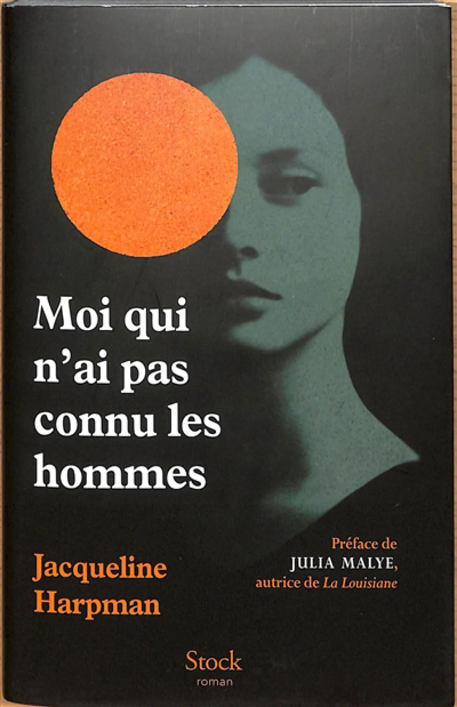

Moi qui n’ai pas connu les hommes
Autrice : Jacqueline Harpman
Genre: Dystopie postapocalyptique
Année de publication: 1995
Langue: Français (titre VA : I who have never known men)

Sommaire
Dans une cave souterraine, 39 femmes et jeunes filles vivent enfermées en groupe, des gardiens armés les surveillent sans jamais leur parler.
Les femmes adulte se souviennent vaguement de ce qu’est la vie à l’extérieur : les villes, familles, les hommes... Mais pas les jeunes.
Un jour, une alarme retentit. Les gardiens s'enfuient précipitamment, laissant les prisonnières derrière eux. Les femmes parviennent à s'échapper. Dehors, elles découvrent un monde désertique, sans villes, sans habitants. Elles marchent pendant des mois en cherchant des traces de civilisation.
Critique
J’ai vraiment adoré mon moment en compagnie de ce livre, c’est un genre d’ouvrage qui fait réfléchir : « si c’était moi qui était dans cette situation, je ferais quoi? »
On sent vraiment l’ambiance étouffante et opressante. On se dit ça ira mieux un peu plus loin! Si je continue de lire, ça ira mieux! Encore un peu et ça ira mieux! Mais rien ne va.
Moment favori
C’est un genre de livre qui fait réfléchir sur les actions qu’on prendrait si nous étions dans les souliers des personnages.
Moment moins fort
Beaucoup de question qu’on amasse tout au long du récit restent sans réponse, même à la toute fin.